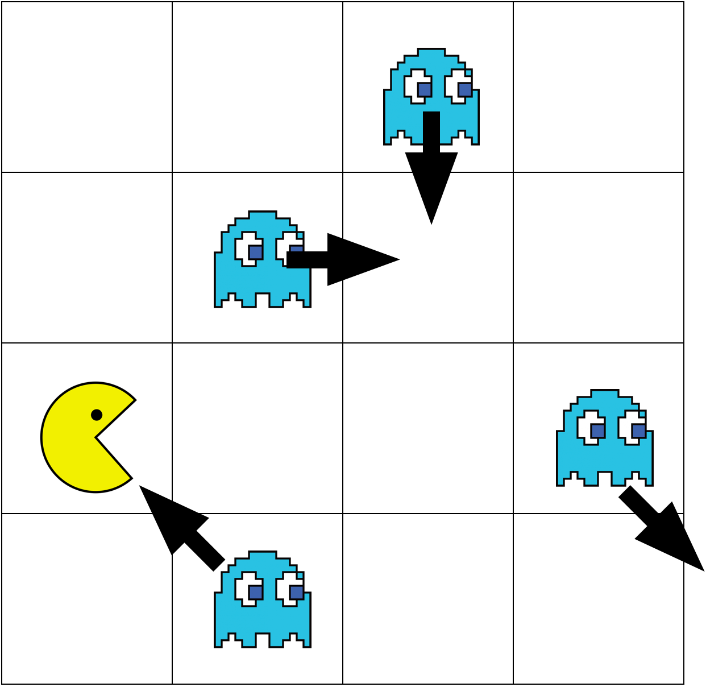
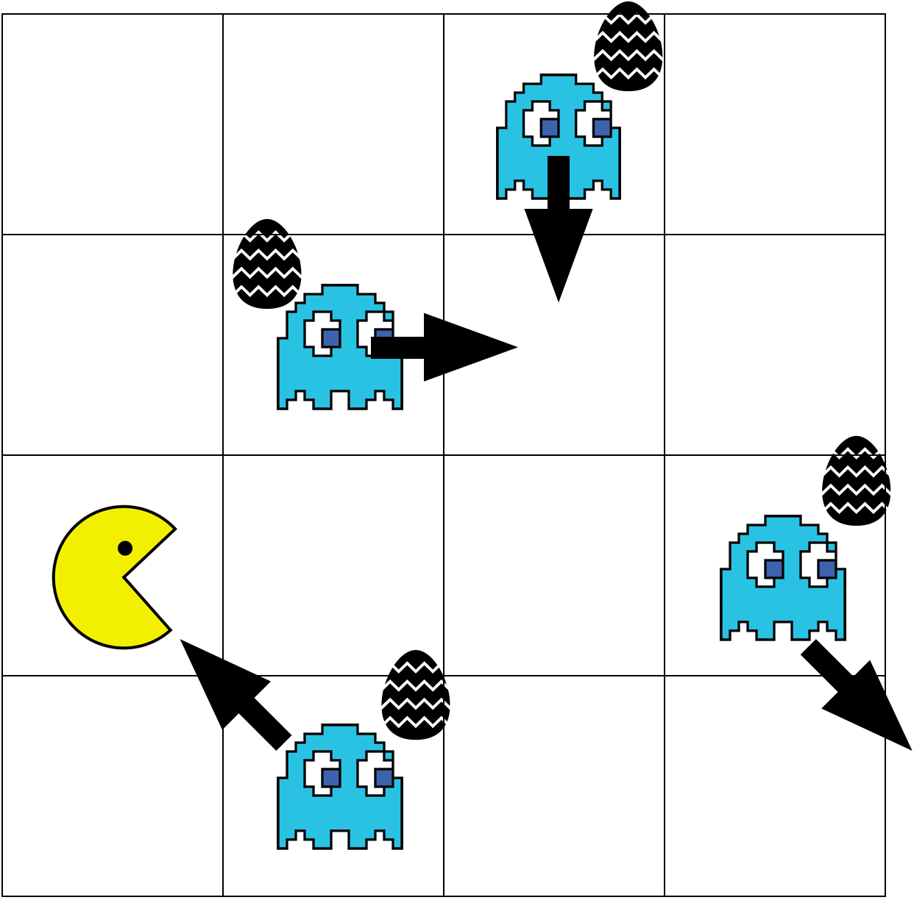
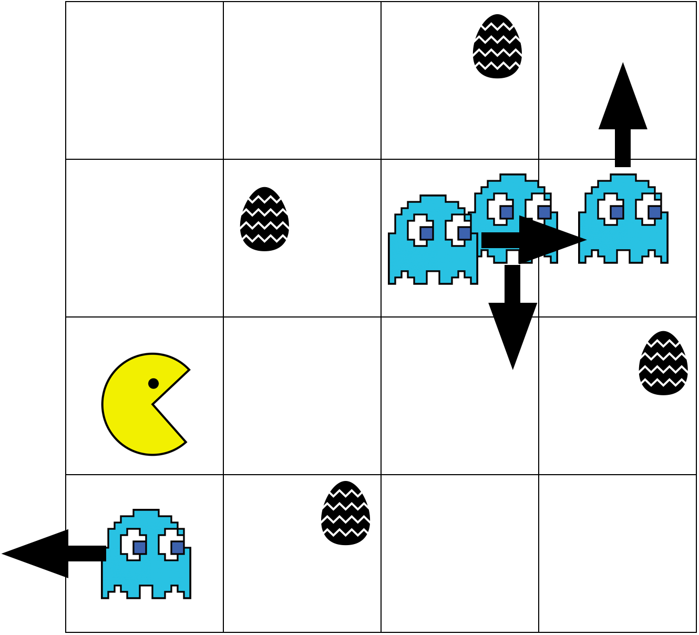
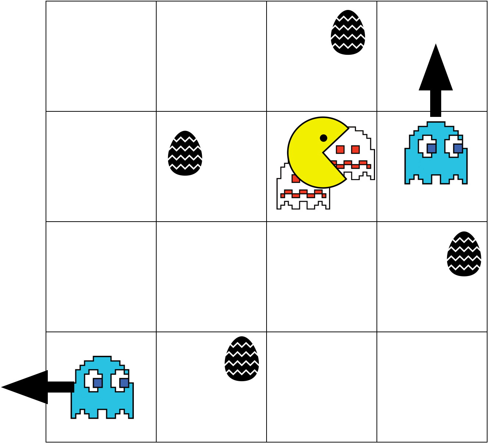
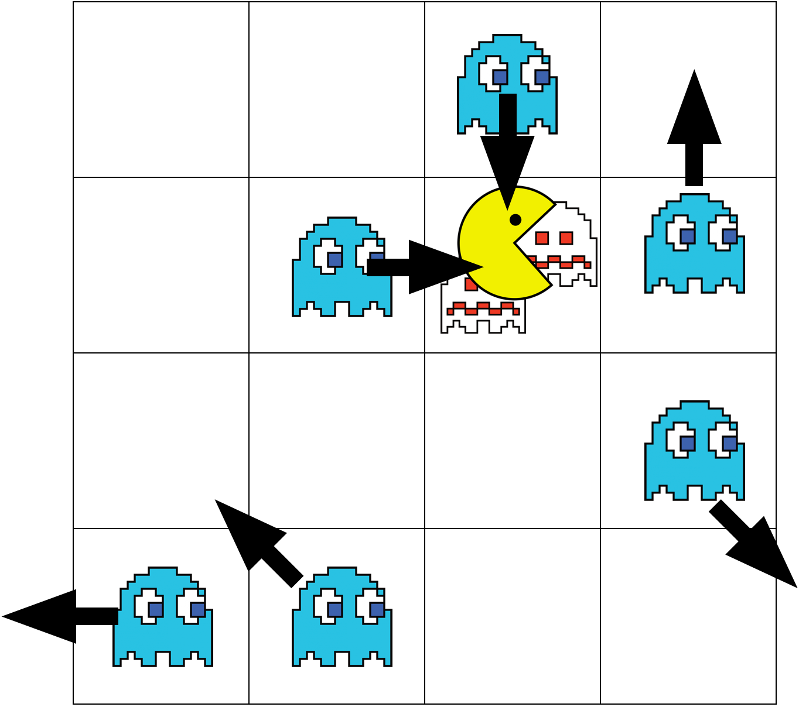
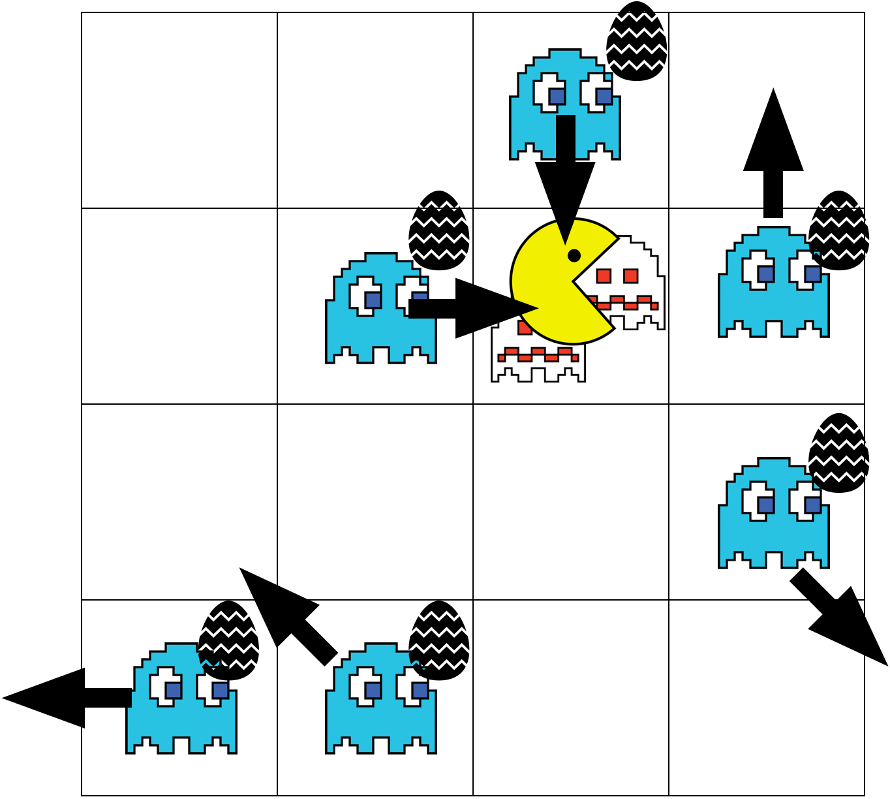
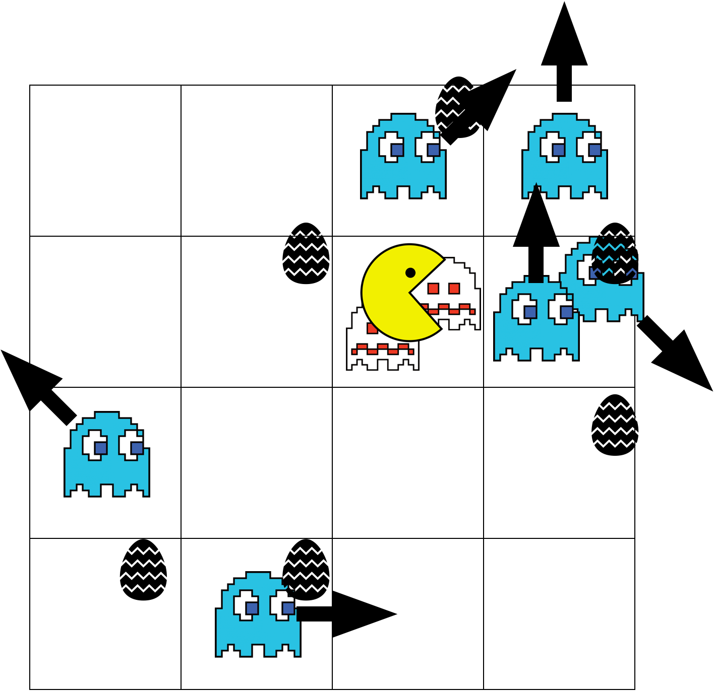
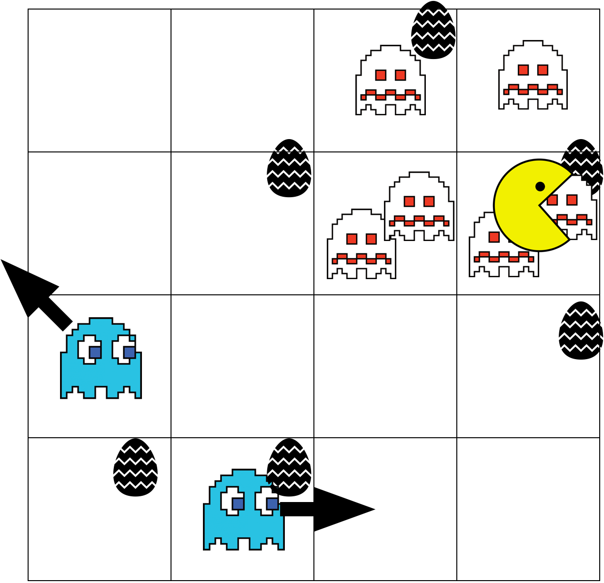
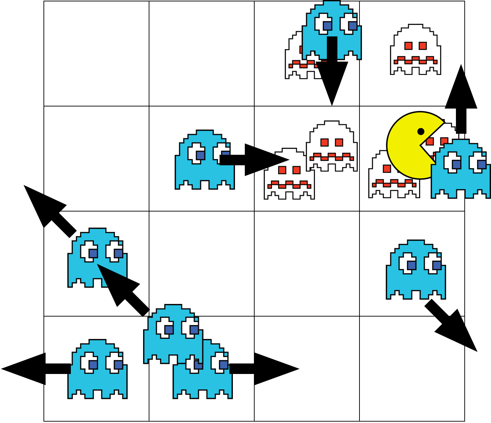

4 x 4 격자에 M개의 몬스터와 1개의 팩맨이 주어집니다. 각각의 몬스터는 상하좌우, 대각선 방향 중 하나를 가집니다. 팩맨 게임은 턴 단위로 진행이 되며 한 턴은 다음과 같이 진행됩니다.
- 몬스터 복제 시도
- 몬스터 이동
- 팩맨 이동
- 몬스터 시체 소멸
- 몬스터 복제 완성
아래 그림과 같이 초기 상황이 주어졌을 때에 턴은 다음과 같이 진행됩니다.
- 몬스터 복제 시도
- 몬스터 이동
- 팩맨 이동
- 몬스터 시체 소멸
- 몬스터 복제 완성
몬스터는 현재의 위치에서 자신과 같은 방향을 가진 몬스터를 복제하려 합니다. 이때 복제된 몬스터는 아직은 부화되지 않은 상태로 움직이지 못합니다. 그림에서 알의 형태를 띄고 있는 복제된 몬스터는 현재 시점을 기준으로 각 몬스터와 동일한 방향을 지니게 되며, 이후 이 알이 부화할 시 해당 방향을 지닌 채로 깨어나게 됩니다.
몬스터는 현재 자신이 가진 방향대로 한 칸 이동합니다. 이때 움직이려는 칸에 몬스터 시체가 있거나, 팩맨이 있는 경우거나 격자를 벗어나는 방향일 경우에는 반시계 방향으로 45도를 회전한 뒤 해당 방향으로 갈 수 있는지 판단합니다. 만약 갈 수 없다면, 가능할 때까지 반시계 방향으로 45도씩 회전하며 해당 방향으로 갈 수 있는지를 확인합니다. 만약 8 방향을 다 돌았는데도 불구하고, 모두 움직일 수 없었다면 해당 몬스터는 움직이지 않습니다.
몬스터가 이동하면 다음과 같이 변하게 됩니다.
팩맨의 이동은 총 3칸을 이동하게 되는데, 각 이동마다 상하좌우의 선택지를 가지게 됩니다. 총 4가지의 방향을 3칸 이동하기 때문에 총 64개의 이동 방법이 존재하는데, 이 중 몬스터를 가장 많이 먹을 수 있는 방향으로 움직이게 됩니다. 만약 가장 많이 먹을 수 있는 방향이 여러개라면 상-좌-하-우의 우선순위를 가지며 우선순위가 높은 순서대로 배열하면 "상상상 - 상상좌 - 상상하 - 상상우 - 상좌상 - 상좌좌 - 상좌하 - ..."과 같이 나타낼 수 있습니다. 이동하는 과정에 격자 바깥을 나가는 경우는 고려하지 않습니다.
예시의 경우에서는 상우우, 우상우, 우우상으로 이동하면 총 2마리의 몬스터를 먹을 수 있기 때문에 이중 우선순위가 제일 높은 상우우 방향으로 움직입니다. 이때 이동할 때 이동하는 칸에 있는 몬스터는 모두 먹어치운 뒤, 그 자리에 몬스터의 시체를 남깁니다.
이때 팩맨은 알은 먹지 않으며, 움직이기 전에 함께 있었던 몬스터도 먹지 않습니다. 즉, 이동하는 과정에 있는 몬스터만 먹습니다.
몬스터의 시체는 총 2턴동안만 유지됩니다. 즉, 시체가 생기고 나면 시체가 소멸되기 까지는 총 두 턴을 필요로 합니다. 현재 예시에는 소멸되는 몬스터가 존재하지 않습니다.
아까 알 형태였던 몬스터가 부화합니다. 처음 복제가 된 몬스터의 방향을 지닌 채로 깨어나게 됩니다.
이 상태에서 한 턴을 더 진행하게 되면 다음과 같이 변화하게 됩니다.



모든 턴이 진행되고 난 뒤 살아 남은 몬스터의 마리 수를 출력하는 프로그램을 작성해보세요.
입력 형식
첫 줄에는 몬스터의 마리 수 m과 진행되는 턴의 수 t이 주어집니다. 두번째 줄에는 팩맨의 격자에서의 초기 위치 r, c가 주어집니다. r은 격자의 몇번째 행인지, c는 격자의 몇번째 열인지를 나타냅니다. 그 다음 줄부터 n개의 줄에는 몬스터의 위치 r, c와 방향 정보 d가 주어집니다. r과 c는 각각 격자의 몇번째 행인지, c는 격자의 몇번째 열인지를 의미하고, 방향 d는 1부터 순서대로 ↑, ↖, ←, ↙, ↓, ↘, →, ↗ 를 의미합니다.
- 1 ≤ m ≤ 10
- 1 ≤ t ≤ 25
- 몬스터의 초기 위치와 팩맨의 초기 위치는 같을 수도 있습니다.
- 턴이 진행되는 동안 살아있는 몬스터의 수가 100만개가 넘는 입력은 주어지지 않는다고 가정해도 좋습니다.
출력 형식
술래가 k번의 턴 동안 얻게되는 총 점수를 출력합니다.
입출력 예제
예제 1
입력 :
4 1
3 1
1 3 5
2 2 7
3 4 6
4 2 2
출력 :
6
예제 2
입력 :
4 2
3 1
1 3 5
2 2 7
3 4 6
4 2 2
출력 :
8
제한
시간제한 : 1000ms
메모리 제한 : 80MB